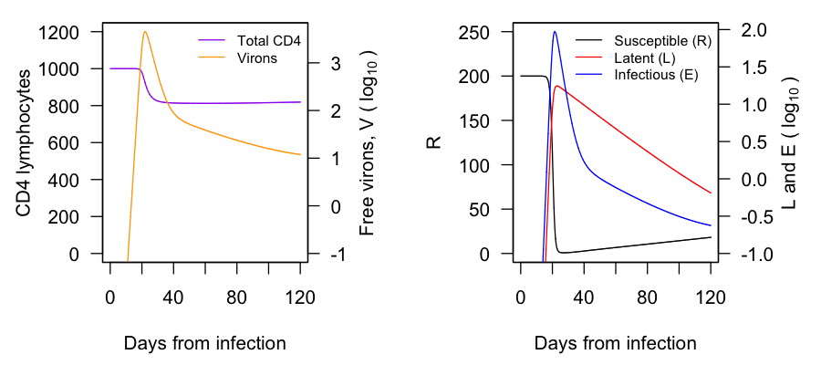
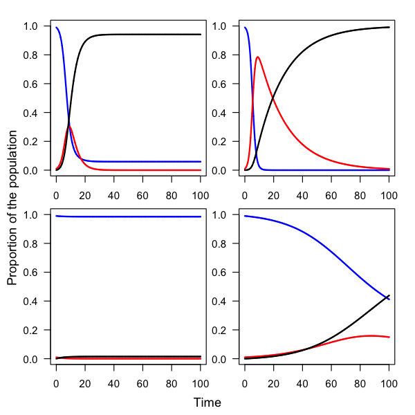
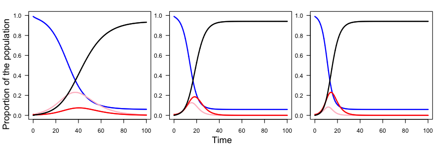

Due Monday, 09 March at 5 PM. Submissions may be printed or digital. Printed copies can be given to me during class, or dropped off at the Biology Office (Arey 101), or under my office door (Olin 216).If digital, please send as a .pdf.
Otto and Day wrote about applications mathematical modeling in understanding HIV. One paper, by Phillip (1996), used a mathematical model to test a hypothesis and come to a counterintuitive conclusion about the immune systems’s role in reducing HIV concentration within infected people. After reading the chapter, learning how to simulate (i.e., solve) a SIR model in R, I asked for you to try to recreate their model. I would like for you to do that in this problem. If you save your ode() output to hiv_out—like this hiv_out <- ode( but continue with the rest of the code that goes in ode()—you can paste the code below to recreate their figures more closely (with axes on a log scale, multiple curves per plot, and multiple y axes).
CD4 <- 1000*(1 - parm_vals["tau"]) + hiv_out[,2] + hiv_out[,3] + hiv_out[,4]
par(mar = c(4.5, 4.5, 1, 4.5), mfrow = c(1, 2))
plot(x = hiv_out[,1], y = CD4, type = "l", las = 1, xlab = "Days from infection", ylab = "CD4 lymphocytes", ylim = c(0, 1200), col = "purple")
par(new = T)
plot(x = hiv_out[,1], y = log(x = hiv_out[,5], base = 10), type = "l", xaxt = "n", yaxt = "n", xlab = "", ylab = "", col = "orange", ylim = c(-1, max(log(x = hiv_out[,5], base = 10))))
axis(side = 4, las = 1)
mtext(side = 4, text = bquote("Free virons, V ("~log[10]~")"), line = 2.25)
legend(x = "topright", bty = "n", col = c("purple", "orange"), lty = 1, legend = c("Total CD4", "Virons"), cex = 0.75)
plot(x = hiv_out[,1], y = hiv_out[,2], type = "l", xlab = "Days from infection", ylab = "R", col = "black", las = 1, ylim = c(0, 250))
par(new = T)
plot(x = hiv_out[,1], y = log(x = hiv_out[,3], base = 10), type = "l", xaxt = "n", yaxt = "n", xlab = "", ylab = "", col = "red", ylim = c(-1, max(log(x = c(hiv_out[,3], hiv_out[,4]), base = 10))))
lines(x = hiv_out[,1], y = log(x = hiv_out[,4], base = 10), col = "blue")
axis(side = 4, las = 1)
mtext(side = 4, bquote("L and E ("~log[10]~")"), line = 2.75)
legend(x = "topright", bty = "n", col = c("black", "red", "blue"), lty = 1, legend = c("Susceptible (R)", "Latent (L)", "Infectious (E)"), cex = 0.75)Here is the code:
library(package = "deSolve")
hiv <- function(time, init, parms) {
with(as.list(c(init, parms)), {
dR <- Gamma*tau - mu*R - beta*R*V
dL <- p*beta*R*V - mu*L - alpha*L
dE <- (1 - p)*beta*R*V + alpha*L - delta*E
dV <- pip*E - sigma*V
return(list(c(dR, dL, dE, dV)))
})
}
time_seq <- seq(from = 0, to = 120, by = 0.01)
init_vals <- c(R = 200, L = 0, E = 0, V = 4e-7)
parm_vals <- c(Gamma = 1.36, tau = 0.2, mu = 1.36e-3, beta = 0.00027, p = 0.1, alpha = 3.6e-2, sigma = 2, delta = 0.33, pip = 100)
hiv_out <- ode(y = init_vals, times = time_seq, parms = parm_vals, func = hiv)
CD4 <- 1000*(1 - parm_vals["tau"]) + hiv_out[,2] + hiv_out[,3] + hiv_out[,4]And the figure:

Also remember that you can change the duration of the simulation. Include a figure of each (4 in total).

Please write down a mathematical model of a disease without a recovery phase, where infected individuals, after clearing the pathogen, become susceptible again.
\[\frac{\mathrm{d}S}{\mathrm{d}t} = -\beta SI + \delta I \\ \frac{\mathrm{d}I}{\mathrm{d}t} = \beta SI - \delta I\] Here, \(\delta\) is the rate at which individuals recover, only to become susceptible again.
With the model from question 3., change the two parameters: the transmission rate, β, and the rate at which individuals become susceptible again, γ. What are the two qualitative outcomes of this model?
If the infection is cleared at a greater rate than it is transmitted, then one outcome is that the disease goes extinct leaving us with no infectious. If trasmission is greater than clearing, then there will be an endemic state as a balance between susceptible and infectious subpopulations, but never 100% susceptible.

Below is some data I acquired for COVID-19:
first_date_I <- as.Date("2020-01-25")
first_date_R <- as.Date("2020-02-01")
last_date <- as.Date("2020-02-29")
infec_seq <- seq(from = first_date_I, to = last_date, by = 1)
rec_seq <- seq(from = first_date_R, to = last_date, by = 1)
infec <- c(1438, 2118, 2927, 5578, 6165, 8235, 10151, 12281, 16804, 19884, 24027, 27585, 30798, 34485, 37069, 40326, 42696, 44584, 45539, 60627, 66634, 69112, 71194, 73273, 75029, 75634, 77227, 76762, 77612, 80435, 78707, 79665, 82246, 82333, 83574, 85591)
rec <- c(288, 463, 617, 866, 1120, 1507, 2000, 2651, 3313, 3905, 4689, 5279, 6531, 7952, 9477, 10908, 12590, 14315, 16136, 18060, 19258, 22613, 23452, 25128, 27895, 30422, 33555, 36263, 39524)
plot(x = infec_seq, y = infec, pch = 16)
lines(x = infec_seq, y = infec)
points(x = rec_seq, y = rec, col = "blue", pch = 16)
lines(x = rec_seq, y = rec, col = "blue")Please develop an SEIR model and change the parameter values by hand until you generate a set of curves that, when overlaid on the COVID-19 data, look similar. Please include the figure and the parameter values you used.